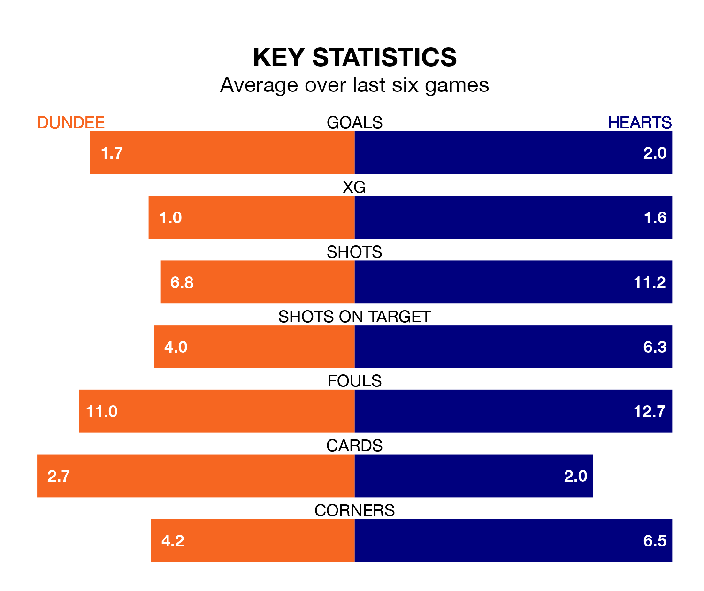

Saturday's match between Dundee and Hearts promises to be one for the neutrals, as two of Premiership's most free-scoring sides go head-to-head.
Ahead of the game at Kilmac Stadium at Dens Park, the Dees and Hearts sit joint-third in the goal-scoring charts, with 29 goals apiece.
Striker Amadou Bakayoko leads the way for the home side, having bagged five goals in their 21 games to date.
And Lawrence Shankland has been the main man in the opponents' penalty box for Hearts, with 14 goals.
With Zander Clark between the sticks, Hearts can rely on one of the league's safest pair of hands. He has kept 11 clean sheets in his 23 appearances this season, and only one other 'keeper – Rangers's Jack Butland – has been able to prevent the opposition scoring on more occasions in Premiership.
In Dundee's net, Trevor Carson has seven clean sheets in 19 games. He has conceded a goal every 66 minutes, 80% more often than the 122 minutes between goals for Clark.
The Dees are in mixed form in Premiership, with two wins and two draws from their last six games.
With five wins and a draw over that period, the away side's form is much better – they have taken 16 points from 18, compared to the hosts' eight.
In the last 10 years, Dundee and Hearts have played each other on 20 occasions. Dundee won six of them, Hearts 11, and they drew three times.
On average, the Dees scored 1.1 goals and Hearts 1.6 in those matches.
Their last meeting was on January 23, when Hearts won 3-2 at home.
Hearts are third in the table after 23 games, of which they have won 13 and drawn three, earning 42 points.
Dundee are three places behind Hearts in sixth, with six wins and eight draws putting them on 26 points.
Dundee's last match was on Tuesday, a 1-1 draw against Aberdeen, with Lee Ashcroft getting the goal for the Dees.
Hearts beat Aberdeen 2-0 last time out, on January 27, with Jorge Grant and Shankland on the scoresheet.
Updated: 10:40 (UTC), 01/02/24